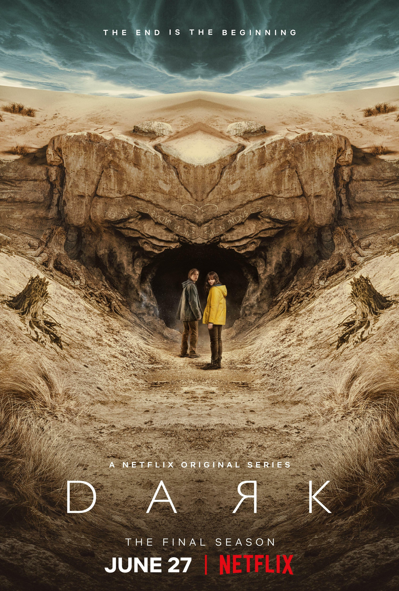

En 2019, le policier Ulrich Nielsen cherche désespérément son fils disparu, Mikkel, âgé de 12 ans. Trente-trois ans plus tôt, en 1986, c'est son frère cadet Mads qui avait disparu dans des circonstances tout aussi mystérieuses. Dans la ville de Winden, quatre familles, traumatisées par cette disparition, tentent de résoudre les mystères qui entourent la région. Jonas Kahnwald est lui aussi marqué par cette affaire, ainsi que par le suicide de son père. Il tente d'en savoir plus. Les enquêtes des policiers et de certains habitants mettent en lumière une histoire qui recommence tous les trente-trois ans. Des événements se déroulant en 1953, 1986 et 2019 sont étroitement liés. Les recherches effectuées pour trouver le coupable de ces disparitions vont peu à peu révéler les secrets de la petite ville paisible.
3SERIES
DARK

les informations
| Série | DARK |
|---|---|
| Réalisateur | Baran bo Odar |
| Acteurs | Julika Jenkins, Louis Hofmann, Maja Schöne, Andreas Pietschmann, Lisa Vicari |
| Genre | Science-fiction |
| Nombre de saisons | 3 |
| Nombre d'épisodes | 26 |
| Nationalité | Allemand |
| Durée | 44-60 minutes |
| VOD | NETFLIX |
| Scénaristes | Baran bo Odar, Jantje Friese |
| année de sortie | 1 décembre 2017 |
PHOTOS


BONDE D'ANNONCE
Acteurs

Julika Jenkins
Claudia Tiedemann

Louis Hofmann
Jonas Kahnwald

Maja Schöne
Hannah Kahnwald

Andreas Pietschmann
The Stranger

Lisa Vicari
Martha Nielsen

Mark Waschke
Adult Noah